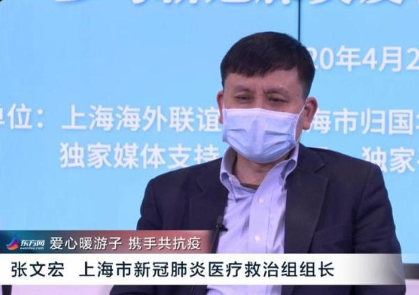

当地时间4月2日中午，华山医院感染科主任张文宏、上海市精神卫生中心主任医师谢斌等嘉宾连线海外华侨华人、留学人员，在线解答了海外华人抗疫问题。

张文宏
张文宏建议留学生与海外华人在条件允许的范围内主动戴口罩，虽然不能强制当地人戴，但在人群聚集的环境里要尽量确保做到。张文宏强调："这次新冠肺炎，谁谨慎谁可以过得好，不容易被感染；而你如果非常毛糙，风险极大。"张文宏还再三重复了"戴口罩、勤洗手、呆在家"这三件事，他表示只要认认真真做好这三件事，就会是安全的。有留学生对超市买回来的东西和购物袋是否需要喷撒消毒液提问，张文宏认为这么做没有意义，回来好好洗手比使用一切消毒用品都要管用。
当说到很多人发烧胃口不好不愿意吃东西时，张文宏明确告诉大家，在生病的时候有两件事情特别重要：一是要吃足够的东西。很多人吃东西吃得不够，到最后新冠肺炎感染起来，身体免疫力没有了。这时候在家里要不断地喝牛奶，如果能喝尽量喝，鸡蛋、牛排尽量地吃。现在感冒吃粥和咸菜没有用，营养很重要，新冠肺炎在上海生重病的病人是因为在旅途劳顿的路上没有好好吃东西，到隔离观察时也没吃好，如果居家隔离，饮食这点很重要。二是心理问题，千万不要恐惧。如果没有恐惧，保证营养，发烧的时候处理一下，熬过三天到七天左右的时间，基本上就好了。